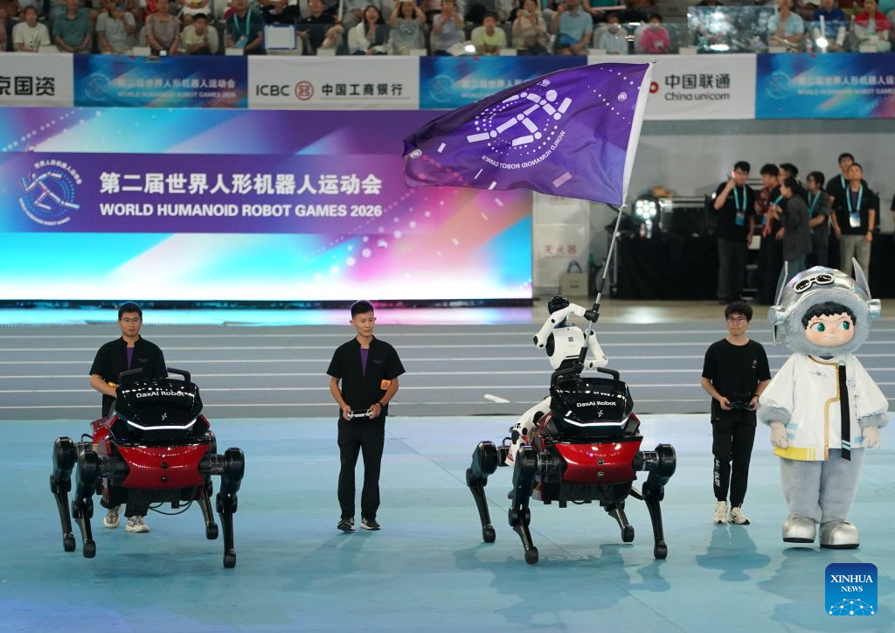
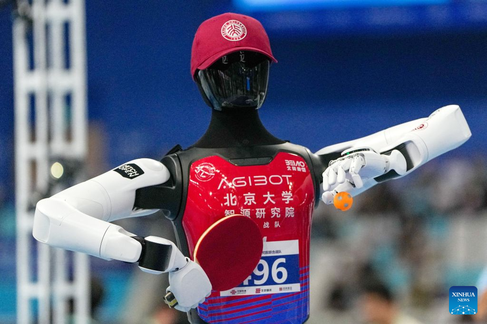
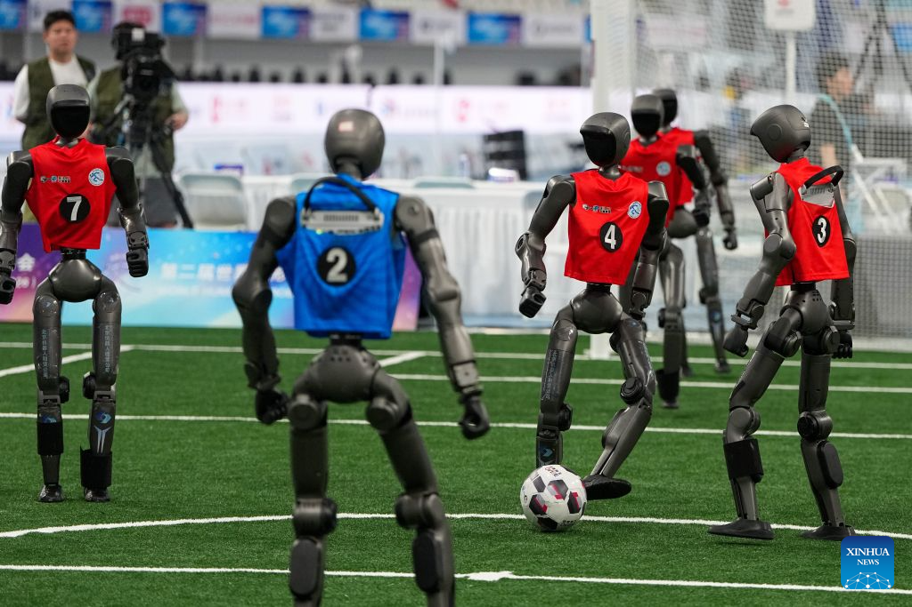
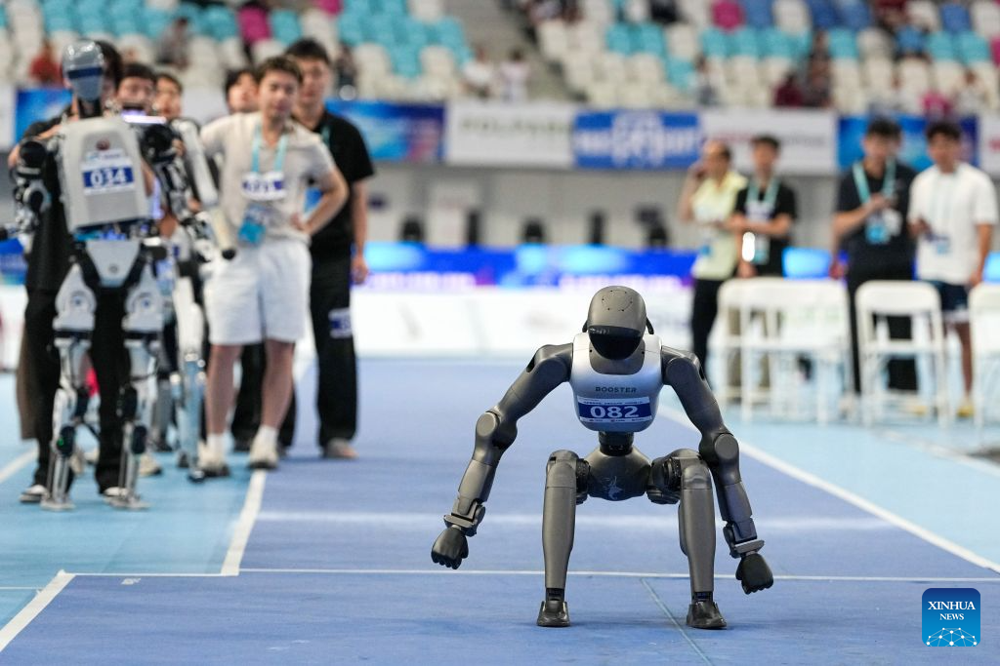
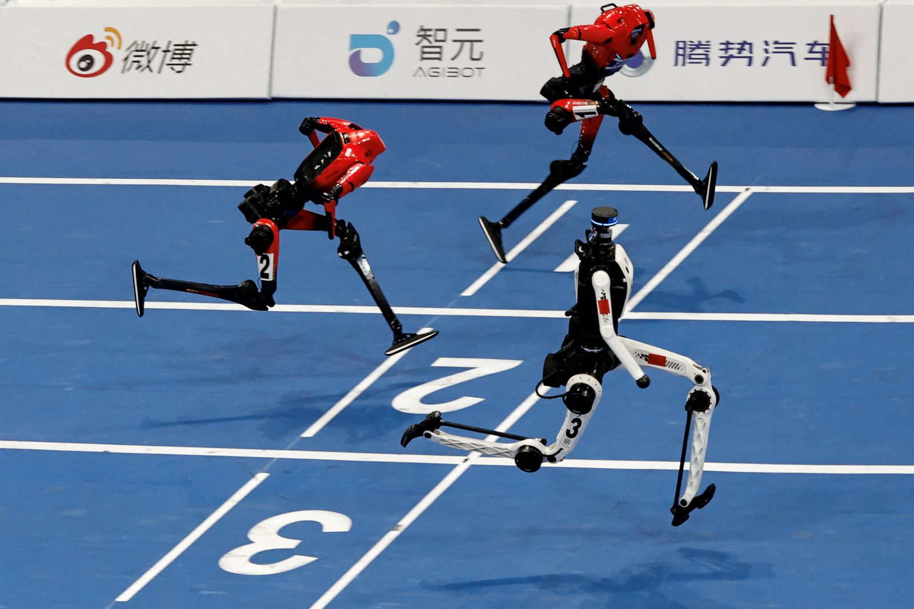

Вторые World Humanoid Robot Games прошли 22–26 августа 2026 года в пекинском Национальном конькобежном стадионе «Ледяная лента». Это не турнир Международного олимпийского комитета, а большой публичный бенчмарк индустрии: роботы бегут, прыгают и дерутся, а затем идут в импровизированный магазин, ресторан или квартиру — туда, где рекордная скорость перестаёт быть главным навыком.
Инженеры совершили огромный скачок в механике и управлении движением. Но надёжное восприятие, тонкая моторика, безопасная остановка и перенос навыка в незнакомую среду всё ещё отстают. «Тело» робота развивается быстрее его «здравого смысла».
01 · Масштаб
Что это было — спорт, шоу или промышленный полигон?
Ответ: всё сразу. Организаторы построили событие по модели мультиспортивных игр, но его метрики важнее медалей. На одной площадке столкнули 666 команд, 2 056 роботов и 51 дисциплину. Всего состоялось 1 301 отдельное состязание: 30 спортивных и 21 прикладное.
Масштаб вырос почти взрывным образом. В 2025 году участвовали 280 команд и более 500 роботов в 26 дисциплинах; через год команд стало на 138% больше, роботов — примерно в четыре раза больше, а программа растянулась с трёх до пяти дней. Так быстро растёт не только турнир, но и доступность платформ, приводов, датчиков и команд, способных их программировать.
роботов · 26 дисциплин
роботов · 51 дисциплина
Турнир назывался мировым: организаторы заявили команды из 16 стран и шести континентов. Но международной была скорее география, чем расстановка сил. 641 из 666 команд и 1 975 из 2 056 роботов представляли Китай. На все остальные страны пришлось 25 команд и 81 машина. Tesla и Boston Dynamics не приехали. Поэтому результаты прежде всего описывают скорость китайской экосистемы, а не всю мировую робототехнику.

02 · Программа
От стометровки до складывания одежды
Спортивная половина программы выглядела эффектно: 100, 400 и 1 500 метров, эстафета, барьеры, три вида прыжков, футбол 3 × 3 и 5 × 5, гимнастика, тяжёлая атлетика, настольный теннис, тайцзи, танцы, свободный бой, перетягивание каната и традиционное метание тоуху. Каждая дисциплина изолировала свой инженерный вопрос: скорость, баланс, контакт, точность руки, коллективное поведение или восстановление после падения.
Тело
Быстро ли робот бежит? Удерживает ли центр масс? Переживает ли столкновение? Повторяет ли точную траекторию под нагрузкой?
- лёгкая атлетика
- футбол и единоборства
- гимнастика и танцы
- тяжёлая атлетика
Тело + среда
Понимает ли робот задачу? Видит ли нужный предмет? Строит ли длинный план? Исправляет ли ошибку без подсказки?
- дом, магазин, ресторан
- отель, офис, библиотека
- производство и склад
- пожар и зарядка электромобиля
Прикладные задания были менее зрелищными и более важными. В ресторане робот слышал заказ, брал еду щипцами, разогревал её, наливал не менее 200 мл напитка и доставлял поднос. В квартире — вынимал одежду из стиральной машины, переносил на кровать, складывал, убирал в шкаф и параллельно реагировал на просьбу забрать посылку. Это уже не одна отрепетированная траектория, а цепочка восприятия, навигации и манипуляций.
Экзамен для кисти: восемь задач, где миллиметр важнее секунды
Особенно полезен кабель. Робот должен распознать USB-коннектор и нужный разъём, оценить ориентацию, совместить детали и приложить силу так, чтобы ничего не сломать. Для человека это секундное действие с непрерывной тактильной обратной связью. Для машины — сложная задача зрения, контакта и коррекции в реальном времени. Поэтому заголовок Reuters — «Роботы могут обогнать человека, но могут ли они подключить кабель?» — точно описывает главный парадокс Игр.


03 · Самостоятельность
Ими управляли люди? Иногда — да
Обычные забеги на 100, 400 и 1 500 метров, эстафета и все три прыжковые дисциплины проводились полностью автономно. Перед стартом оператор мог передать команду «начать», после финиша — «завершить», но рулить ногами во время попытки запрещалось. Это прямо записано в правилах соревнований по лёгкой атлетике.
Автономный режим
Робот сам воспринимает среду, выбирает действие, контролирует тело и исправляет отклонения.
Телеуправление
Человек принимает ключевые решения с пульта. В 20 из 21 сценария итоговые очки делились пополам.
На барьерах команды могли выбирать режим. В контактных дисциплинах — особенно в кикбоксинге — телеуправление и полуавтоматические схемы были обычны. Оператор видел картинку с камеры, но не чувствовал расстояние и силу контакта; отсюда удары по воздуху и падения от собственного замаха.
Если робот эффектно делает один удар или берёт предмет, кадр ещё не доказывает универсальную автономность. Нужно знать режим управления, число попыток, подготовку сцены, критерии успеха и процент завершений. Публичной сводки по автономным и телеуправляемым прохождениям организаторы не опубликовали.
04 · Результаты
За год стометровка ускорилась в 2,5 раза
Звездой турнира стал Tiangong Ultra Пекинского инновационного центра гуманоидной робототехники. Его время улучшалось прямо по ходу Игр: 9,39 секунды в предварительном забеге, 8,86 — на следующем этапе и 8,64 секунды в финале. В 2025 году лучшему роботу требовалось 21,50 секунды. Результаты подтверждены итоговыми материалами Reuters и Associated Press.
Роботы научились превращать электрическую мощность в очень быстрое движение. Это впечатляющий рекорд инженерии — но не мировой рекорд человеческой атлетики и не прямое измерение интеллекта.

Почему сравнение с Усэйном Болтом условно
На секундомере 8,64 действительно меньше человеческого рекорда 9,58. Но робот имеет другое тело, массу, длину ног, источник энергии и конструкцию стоп; классы не ограничивают мощность приводов и батарей так, как биология ограничивает человека. Старт и измерение реакции отличаются от сертифицированного турнира World Athletics. Наконец, спортсмен должен безопасно остановиться — роботы нередко пересекали финиш и врезались в толстый мат.

05 · Победители
Три стратегии: скорость, универсальность и реальная работа
Итоговые таблицы можно считать по отдельным командам или объединять команды одного производителя. Поэтому формулировки в новостях расходились. Tiangong стала лучшей отдельной командой — пять золотых и четыре бронзовые. Если сложить все коллективы бренда, AGIBOT набрала 18 золотых, 16 серебряных и 12 бронзовых против 15, 12 и 18 у Tiangong. Третьей по общему зачёту стала Unitree.
AGIBOT
46 медалейБег с барьерами, тайцзи, гостиница, библиотека, аварийные сценарии и семь побед из восьми у кисти OmniHand.
TIANGONG
45 медалейГлавные беговые и прыжковые рекорды, быстрые приводы, облегчённый корпус и эффективное охлаждение.
GALBOT
3 сценарияАвтономные победы в доме, ресторане и магазине. Менее эффектно на видео, зато ближе к экономически полезному роботу.
OmniHand стала одной из самых содержательных историй турнира: платформа дошла до финала всех восьми задач для кистей и выиграла семь. В испытании с порошком один робот полностью автономно отвесил 20 ± 0,5 грамма за 27 секунд — единственный автономный финиш в этом задании по собственным данным компании. Это заявление производителя, а не независимый аудит, но регламент и результат делают его важнее эффектной демонстрации одной заранее записанной траектории.
Технологический разрез
Из чего складывается рекорд
Нет одной нейросети, которая «научила робота бегать». Скачок возникает, когда восемь слоёв работают вместе — и слабейший из них не обрушивает всю систему.
Механика
Лёгкая рама, геометрия ног, стопы и амортизация.
Приводы
Высокий крутящий момент при меньшей массе и люфтах.
Охлаждение
Отвод тепла позволяет дольше держать предельную мощность.
Оценка состояния
Датчики и фильтры восстанавливают позу тела в реальном времени.
Reinforcement learning
Политика движения учится на миллионах попыток в симуляции.
Sim-to-real
Случайные массы, трение и задержки готовят политику к физическому миру.
Зрение и VLA
Камера, язык и действие соединяются в длинных прикладных задачах.
Производство
Быстрые итерации, запас компонентов и ремонт между стартами.
Организаторы сообщили о тысячах часов телеметрии и более чем десяти тысячах записей движений, собранных за турнир. Каждое падение становится датасетом: температура мотора, токи, положение суставов, видео и момент потери равновесия помогают воспроизвести ошибку в симуляции и обучить следующую версию контроллера.
06 · Провалы
Падения — журнал ошибок
На прямой машине достаточно повторять устойчивый цикл. В повороте одновременно меняются направление, нагрузка и положение стоп; небольшая задержка оценки позы запускает падение, которое уже невозможно компенсировать. На максимальной скорости моторы и силовая электроника нагреваются: защита отключает привод, нога теряет жёсткость, корпус складывается.
Баланс
Поворот, контакт и неровная постановка стопы быстро выводят тело за область восстановления.
Тепло
Высокий момент означает высокий ток. Перегрев превращает сильную ногу в выключенный шарнир.
Торможение
Политика оптимизирует пересечение финиша, а не безопасное рассеивание энергии после него.
Восприятие
Кабель, складка ткани или переставленная лампа превращают знакомую сцену в новую.
В кикбоксинге машины били воздух, цеплялись за канаты и падали от собственного замаха. В быту промахивались мимо ручки, теряли кабель, не справлялись с другой формой бутылки. Именно поэтому Nature сформулировала контраст предельно просто: на этих Играх роботы били рекорды в спринте и испытывали трудности, забивая гвозди.
07 · Большая картина
Зачем Китаю такая «Олимпиада»
Шоу решает сразу несколько промышленных задач. Оно создаёт общий публичный бенчмарк: разные платформы сталкиваются с одинаковой трассой, предметами и правилами. Оно генерирует редкие данные о предельных режимах и отказах. Оно показывает заказчикам физическую машину под давлением времени. Наконец, турнир синхронизирует университеты, производителей приводов, разработчиков моделей и будущих покупателей вокруг общей системы требований.
Единые правила делают сравнение менее рекламным и быстрее обнаруживают слабые узлы.
Тысячи падений и удачных действий превращаются в телеметрию для следующего цикла обучения.
Заводы, магазины и гостиницы видят, какие сценарии уже близки к эксплуатации, а какие ещё лабораторные.
Классы, коэффициенты автономности и процедуры безопасности постепенно становятся отраслевым языком.
Но Игры не доказали, что универсальный домашний робот уже готов, что телеуправляемый трюк равен автономному интеллекту или что единичная успешная попытка означает промышленную надёжность. В программе почти не было тестов на недели непрерывной работы, стоимость владения, безопасное взаимодействие с детьми и устойчивость к действительно незнакомым помещениям. Подробный независимый разбор этого разрыва опубликовали The Guardian и Reuters.
Главный прогресс 2026 года — не в том, что машина стала «умнее человека». Он в том, что физические роботы стали быстрее обучаться, дешевле повторяться и чаще выходить из лаборатории в проверяемый реальный мир.